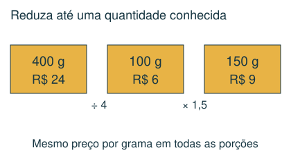
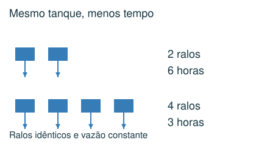
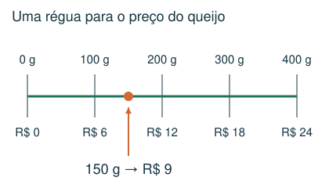
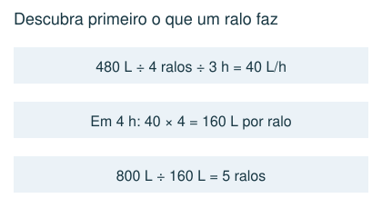

1 Básico
500 g de queijo custam R$ 30. Mantendo o preço por grama, quanto custam 150 g?
- A) R$ 4,50
- B) R$ 15,00
- C) R$ 10,00
- D) R$ 9,00
Meu raciocínio
CAPÍTULO 04 · MATEMÁTICA · 6º ANO
Relacionar preço, consumo, vazão e quantidade.
1. Observe → 2. Entenda → 3. Resolva → 4. Confira
OBSERVE E COMPREENDA · 1

Se dobrar a quantidade dobra o custo, mantendo o preço por unidade, há proporcionalidade direta. Descubra primeiro o valor de uma unidade. Exemplo: 300 g custam R$ 12; 100 g custam R$ 4; 500 g custam R$ 20.
Se um carro faz 15 km por litro, litros necessários = distância ÷ 15. Se a informação é litros por 100 km, calcule quantos grupos de 100 km existem. A unidade esclarece qual operação usar. Pedágios são custos adicionais, não combustível.
OBSERVE E COMPREENDA · 2

Com a mesma quantidade de água, mais ralos idênticos reduzem o tempo. Calcule a vazão de um ralo: volume ÷ número de ralos ÷ tempo. Depois, número de ralos = novo volume ÷ tempo desejado ÷ vazão de um ralo. Isso pressupõe vazão constante e ralos funcionando juntos.
Uma taxa fixa somada ao preço por unidade quebra a proporcionalidade do custo total: dobrar a compra não dobra a taxa. Em pilhas de vasos encaixados, a altura inicial também é diferente do acréscimo de cada vaso; esse caso pertence ao estudo de relações e incógnitas.
VAMOS RESOLVER JUNTOS · 1
400 g de queijo custam R$ 24. Quanto custam 150 g?

Preço de 1 g: 24 ÷ 400 = R$ 0,06. Preço de 150 g: 150 × 0,06 = R$ 9.
VAMOS RESOLVER JUNTOS · 2
4 ralos esvaziam 480 L em 3 h. Quantos ralos iguais esvaziam 800 L em 4 h?

Cada ralo retira 480 ÷ 4 ÷ 3 = 40 L/h. Em 4 h, um retira 160 L. São necessários 800 ÷ 160 = 5 ralos.
AGORA É COM VOCÊ
Registre suas contas no caderno ou imprima esta página. Explique como chegou à resposta.
500 g de queijo custam R$ 30. Mantendo o preço por grama, quanto custam 150 g?
Um carro percorre 12 km por litro. Uma viagem tem 180 km e o litro custa R$ 6. Há dois pedágios de R$ 7. Qual é o gasto total?
3 ralos iguais esvaziam 360 L em 4 horas. Quantos desses ralos esvaziam 600 L em 5 horas, com vazão constante?
Um veículo usa 20 L a cada 100 km. Uma viagem de 500 km consome exatamente 2,5 tanques. Qual é a capacidade do tanque?
Uma loja cobra R$ 8 por caderno mais uma taxa fixa de entrega de R$ 6 por pedido. Um pedido com 3 cadernos custa R$ 30. Quanto custa um pedido com 6 cadernos?
CONFERIR TAMBÉM É APRENDER
Abra cada resposta depois de tentar resolver.
D) R$ 9,00. Cada 100 g custa R$ 6. Logo, 150 g custam R$ 9.
C) R$ 104,00. Combustível: 180 ÷ 12 = 15 L; custo R$ 90. Pedágios: R$ 14. Total R$ 104.
B) 4. Um ralo retira 360 ÷ 3 ÷ 4 = 30 L/h. Em 5 h retira 150 L. 600 ÷ 150 = 4 ralos.
A) 40 L. A viagem consome 5 × 20 = 100 L. Um tanque contém 100 ÷ 2,5 = 40 L.
D) R$ 54,00. São 6 × 8 + 6 = 54 reais. Dobrar o número de cadernos não dobra a taxa fixa.
Estas questões originais trabalham o tópico. Os recortes incluem resoluções publicadas.